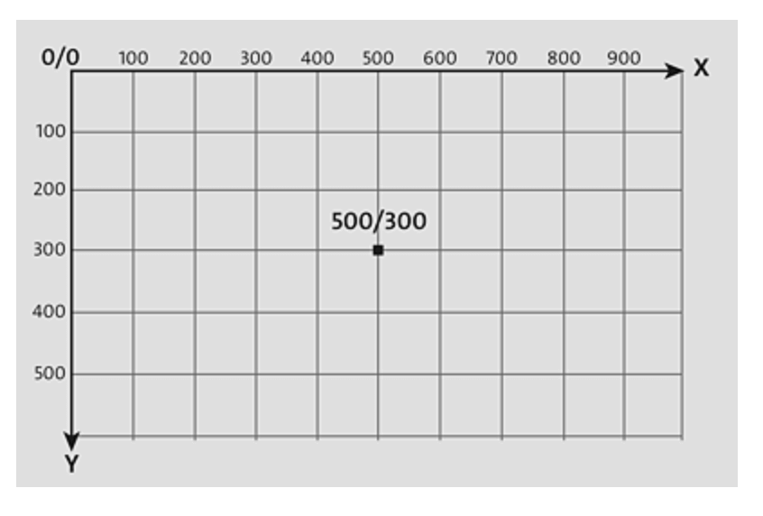
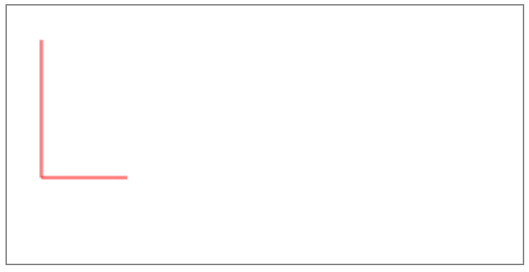

Компьютерный исполнитель Canvas

Технология HTML5 CANVAS предназначена для создания растровых графических изображений в окне браузера расширенными средствами языка JavaScript.
Среда обитания исполнителя Canvas — координатная плоскость, расположенная на странице браузера начиная. Начало отсчёта идёт с левого верхнего угла страницы (0;0). Для того, чтобы задать конкретный размер поля используется команда. После подключения системы координат 2D-контекста исходное положение — точка с координатами (500; 300), перо поднято. Размер окна Canvas при этих значения 1000 × 600. первой плоскости. Размер окна Черепахи зависит от заданной учащимися при написании программы.
<canvas id="canvas" width="500" height="300"> </canvas>Для создания локальной системы координат необходимо подключить 2D-контекст
const canvas = document.getElementById("canvas");
const context = canvas.getContext("2d");Перед тем, как перейти непосредственно к рисованию, стоит понимать, как устроена система координат в canvas:
| Команда | Действия |
| ctx.beginPath() | Начинает путь пера |
| ctx.moveTo() | Перемещает поднятое перо |
| ctx.lineTo() | Перемещает опущенное перо |
| ctx.stroke() | Конец пути пера |
| Команда | Действия |
| ctx.lineWidth() | Толщина пера |
| ctx.strokeStyle = "color" | Изменение цвета пера |
| canv.width="х"; | Длина холста |
| canv.height="х"; | Высота холста |
Для того чтобы Черепаха могла выполнять команды, первой командой в программе нужно подключить модуль, содержащий команды управления Черепахой: import turtle
Каждая команда управления Черепахой записывается после ключевого слова turtle и отделяется от него точкой. Например:
| Код: | Программа: |
<!DOCTYPE html<
|
 |
Упражнения

Будет позже
Будет позже
Будет позже
Будет позже
Будет позже
Будет позже
Будет позже
Будет позже
Будет позже
Будет позже